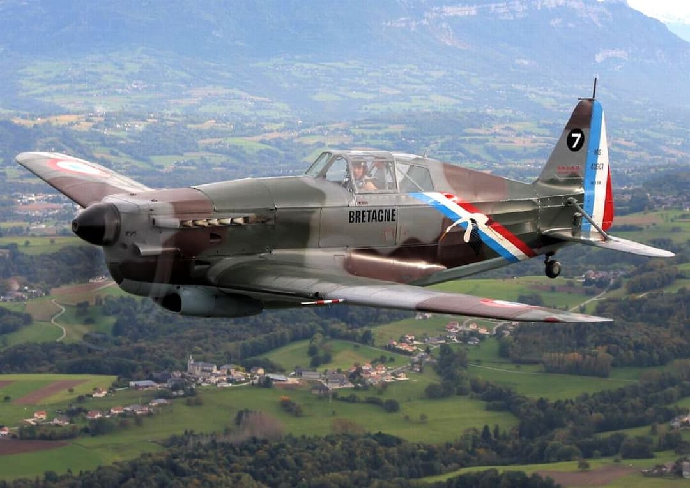

Le Morane-Saulnier MS.406 est le chasseur français le plus répandu au début de la Seconde Guerre mondiale. Premier chasseur moderne de l’Armée de l’Air, il est produit à plus de mille exemplaires et équipe la majorité des groupes de chasse en 1939–1940.
Monoplan à aile basse, train rentrant, cockpit fermé et canon de 20 mm dans le nez, il représente une avancée majeure par rapport aux chasseurs biplans de l’entre-deux-guerres.

Le MS.406 présente une silhouette typique des chasseurs français de 1939 : fuselage fin, radiateur sous le nez, verrière étroite et train rentrant. Les appareils sont peints en camouflage brun-vert sur le dessus, avec un dessous gris-bleu.
En mai–juin 1940, le MS.406 est le chasseur le plus nombreux de l’Armée de l’Air. Bien que dépassé par le Messerschmitt Bf 109, il reste maniable et efficace à basse et moyenne altitude.
Page du Musée HOP WW2 – Section chasseurs français